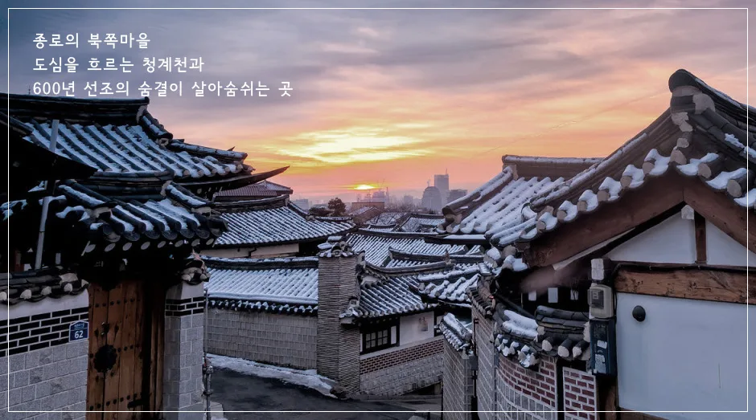
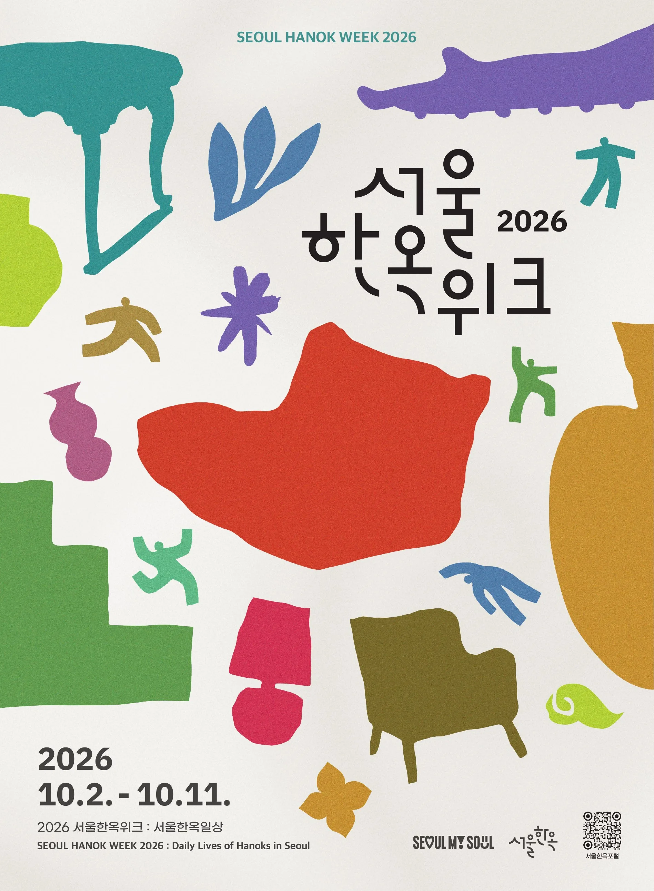
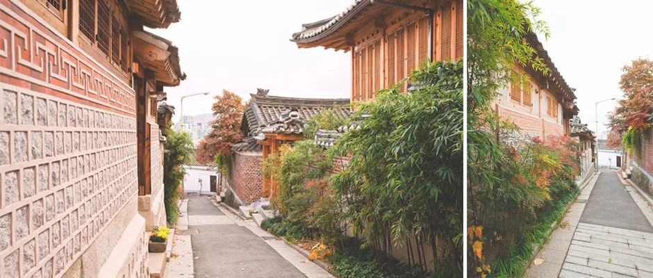
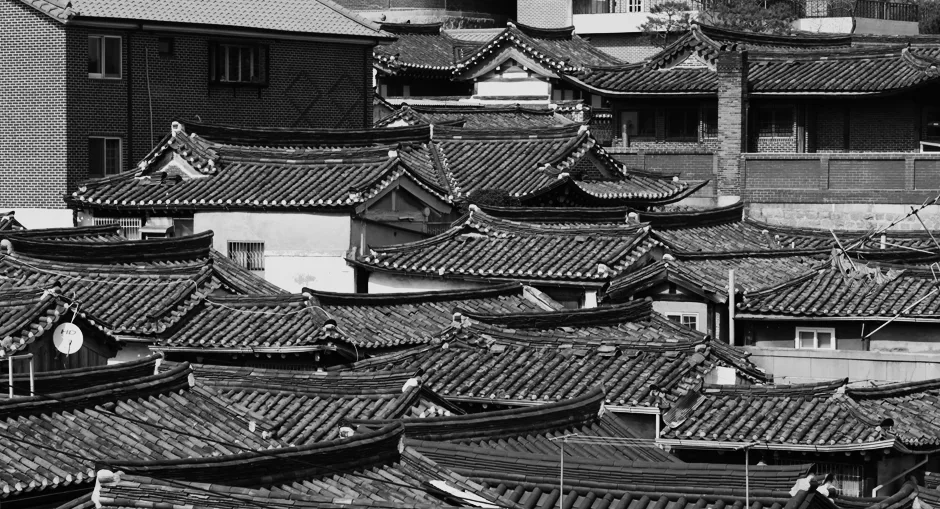
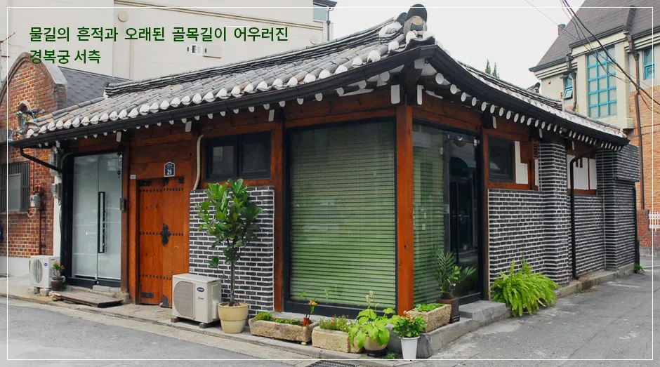
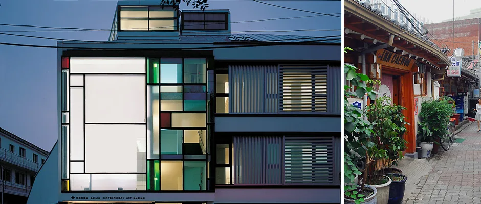
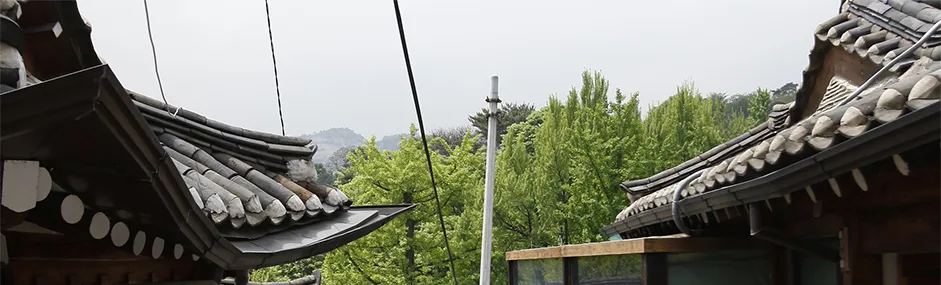
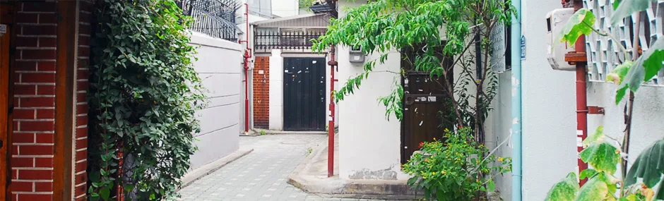

▲ 북촌한옥마을의 노을 무렵 기와지붕 전경. 종로의 북쪽 마을이라 불리는 이곳에서 매년 가을 서울한옥위크가 열린다 ⓒ 서울한옥포털
서울시가 주최하는 2026 서울한옥위크가 10월 2일부터 11일까지 열흘간 북촌과 서촌 일대에서 열린다. 올해 주제는 '서울한옥일상(Daily Lives of Hanoks in Seoul)'으로, 한옥을 박물관 속 유물이 아니라 '오늘을 살아가는 공간'으로 소개하는 데 초점을 맞췄다. 지난해 7만 4천여 명이 다녀간 이 행사는 올해 전시 17개, 답사 15개, 체험 29개, 공연 9개, 이벤트 12개 등 총 82개 프로그램으로 역대 최대 규모로 확대됐다. 다만 북촌과 서촌은 좁은 골목이 미로처럼 얽힌 주거 밀집지역이라 자동차로 방문하려면 사전에 주차 정보를 챙겨야 한다. 이 기사는 행사 일정과 프로그램, 한옥 마을 소개, 그리고 자동차 방문자를 위한 주차 정보까지 순서대로 정리했다.

▲ 2026 서울한옥위크 공식 포스터. 주제는 '서울한옥일상(Daily Lives of Hanoks in Seoul)'이다 ⓒ 서울한옥포털
1. 2026 서울한옥위크 — 일정과 규모
행사 기간은 2026년 10월 2일(금)부터 10월 11일(일)까지 열흘간이며, 장소는 북촌과 서촌 일대다. 올해로 4회째를 맞은 서울한옥위크는 매년 규모를 키워왔는데, 올해는 전시 17개·답사 15개·체험 29개·공연 9개·이벤트 12개를 더해 총 82개 프로그램이 마련됐다. 사전예약이 필요한 시민참여 프로그램은 9월 18일부터 서울한옥포털 누리집에서 신청할 수 있으며, 신청자가 몰릴 경우 추첨으로 참여자를 선정한다. 별도 예약 없이 자유롭게 즐길 수 있는 전시·이벤트성 프로그램도 다수 포함돼 있어, 예약을 놓쳤더라도 현장에서 즐길거리가 있다.
| 유형 | 개수 | 주요 내용 |
|---|---|---|
| 답사(도슨트 투어) | 15개 | 운경고택, 주한스위스대사관, 서울우수한옥 등 평소 개방하지 않는 한옥 탐방 |
| 체험 | 29개 | 전통 공예 소품 만들기, 꽃꽂이, 전통차 다도, 전통주 빚기 등 |
| 전시 | 17개 | 한옥 관련 사진·공예 작품 전시 |
| 공연 | 9개 | 한옥 마당 등 공공한옥 공간을 무대로 한 공연 |
| 이벤트 | 12개 | 참여형 이벤트, 포토존, 경품 추첨 등 |
2. 공예·명상·한옥스테이 — 공공한옥에서 즐기는 체험

▲ 북촌한옥마을의 골목 풍경. 좁은 돌길을 따라 한옥이 이어지는 구조라 서울한옥위크 체험 프로그램 상당수가 이 일대 공공한옥에서 열린다 ⓒ 서울한옥포털
체험 프로그램의 거점은 북촌문화센터, 배렴가옥, 홍건익가옥 등 서울시가 매입해 운영하는 공공한옥이다. 이곳을 중심으로 전통 공예 소품 만들기, 한옥 정원 꽃꽂이, 전통차 시음 다도 클래스, 전통주 빚기 등 40여 개의 답사·체험 프로그램이 진행된다. 다도 클래스나 한옥 마당에서 진행되는 정적인 체험은 마음을 가라앉히는 명상적 성격을 겸하는 프로그램으로 소개되고 있어, 번잡한 도심 한복판에서 잠시 속도를 늦춰보려는 방문객에게 특히 어울린다.
숙박과 연계한 혜택도 있다. 축제 기간 중 북촌빈관, 락고재, 버틀러리 서울 전 지점을 예약할 때 프로모션 코드('hanokweek')를 입력하면 숙박 요금 10% 할인이 적용된다. 여기에 행사 프로그램에 참여한 뒤 현장 사진과 후기를 남긴 방문객 가운데 추첨을 통해 10명에게 서울 공공한옥 '서촌 스테이' 무료 숙박권도 제공된다. 서울 전역에는 종로구·은평구·성북구·동대문구·용산구·강북구·마포구 등에 걸쳐 130개 이상의 한옥체험업 숙소가 등록돼 있어, 하루쯤 한옥에서 묵어보고 싶다면 서울한옥포털의 '서울한옥스테이' 목록에서 지역별로 찾아볼 수 있다.
서울한옥포털에서 서울한옥스테이 목록 확인 가능3. 북촌한옥마을 — 종로의 북쪽 마을, 600년 전통 주거지

▲ 밀집한 기와지붕이 겹겹이 이어지는 북촌한옥마을. 조선시대 양반층 거주지에서 출발해 1930년대 도시형 한옥이 집단으로 들어섰다 ⓒ 서울한옥포털
북촌은 경복궁과 창덕궁 사이, 북악산과 응봉을 잇는 산줄기 남쪽에 자리한 서울의 대표 전통 주거지역이다. 조선시대에는 양반층이 모여 살던 곳이었고, 1930년대 들어 주택경영회사들이 중소 규모의 도시형 한옥을 집단으로 지으면서 지금의 골목 구조가 자리 잡았다. 새로운 건축 재료를 쓴 한옥이 근대적 도시 조직에 적응하며 새로운 형태의 도시주택으로 진화한 사례로 꼽힌다. 가회동 11번지·31번지 일대 골목과 정독도서관, 백인제가옥 등이 대표적인 볼거리이며, 갤러리·카페·전통 공예 작업실이 골목 곳곳에 자리해 걷는 재미가 있다. 지하철 3호선 안국역에서 내려 안내판을 따라 10분 정도 걸으면 닿는다.
4. 서촌 — 경복궁 서측, 물길과 골목이 남은 예술가의 동네

▲ 경복궁 서측 골목 모퉁이의 개조된 단층 한옥. 물길의 흔적과 오래된 골목이 남아 있는 서촌 특유의 풍경이다 ⓒ 서울한옥포털
서촌은 경복궁과 사직단 사이, 인왕산을 등지고 자리한 동네로, '물길의 흔적과 오래된 골목길이 어우러진 경복궁 서측'으로 소개된다. 조선시대에는 중인 계층 관료들이 모여 살았고, 이후 근현대 화가·문인들이 정착하며 예술가의 동네로 이름을 알렸다. 지금은 갤러리와 카페, 통인시장 같은 전통 시장이 뒤섞인 문화지구로 자리 잡았다. 좁은 골목과 낮은 한옥 담장이 아파트와 뒤섞여 있는 풍경이 서촌만의 독특한 매력으로 꼽힌다.

▲ 현대적 갤러리 건물과 전통 골목이 나란히 자리한 서촌. 예술가들이 정착하며 갤러리·카페가 늘어난 동네다 ⓒ 서울한옥포털
5. 자동차로 갈 땐 — 북촌·서촌 인근 공영주차장

▲ 북촌한옥마을 골목 안쪽. 차량 한 대가 겨우 지날 만큼 좁은 길이 많아 주차는 인근 공영주차장을 이용하는 편이 안전하다 ⓒ 서울한옥포털
북촌·서촌은 골목이 좁고 거주자 우선주차 구역이 많아 노상에 임의로 차를 세우면 견인되거나 과태료를 물 수 있다. 자동차로 방문한다면 처음부터 인근 공영주차장에 대고 걷는 편이 훨씬 편하다. 북촌 쪽은 계동길 초입의 한지문화산업센터 공영주차장이 대표적이고, 인사동·안국역 방면에서는 종로구청 공영주차장과 인사동 공영주차장을 이용할 수 있다. 서촌 쪽은 경복궁 서측을 낀 지역 특성상 세종로 공영주차장이나 경복궁 서측 주차장이 가깝고, 주말·성수기에는 만차가 잦으므로 오전 이른 시간 방문을 권한다. 종로구 공영주차장은 대부분 신용카드·티머니·제로페이 결제가 가능하며, 장애인 80%, 경차·저공해차량 50% 할인이 공통 적용된다.
| 주차장 | 인접 지역 | 비고 |
|---|---|---|
| 한지문화산업센터 공영주차장 | 북촌(계동길) | 북촌한옥마을 도보 접근에 가장 가까운 축 |
| 종로구청 공영주차장 | 인사동·안국역 | 24시간 운영, 30분당 1,000원 수준, 카드·제로페이 결제 |
| 인사동 공영주차장 | 인사동 | 주말·공휴일 일부 시간대 요금 할인 운영 |
| 세종로 공영주차장 | 경복궁 광화문 인근 | 서촌 진입 전 환승 개념으로 활용 가능 |
| 경복궁 서측 주차장 | 서촌 | 거주자 우선주차 구역이 많아 주말 만차 잦음 |
6. 함께 묶기 좋은 근교 명소 — 경복궁·인사동·삼청동

▲ 대문과 낮은 담장이 이어지는 서촌 골목 안쪽. 도보로 경복궁까지 이어지는 동선이 짧다 ⓒ 서울한옥포털
북촌·서촌에서 한옥위크 프로그램을 즐긴 뒤 하루 일정을 이어가기에도 좋은 위치다. 서촌에서 도보로 경복궁 서측 후문(영추문)까지 금방 닿고, 북촌에서는 인사동 전통공예 거리와 삼청동 카페거리가 도보 15~20분 거리에 있다. 경복궁 관람과 한옥위크 체험, 삼청동 카페 산책을 하루 코스로 묶으면 서울 도심에서도 전통과 현대가 겹치는 동선을 짤 수 있다. 다만 이 일대는 평소에도 주말 유동인구가 많은 지역인 만큼, 한옥위크 기간에는 평소보다 붐빌 가능성이 커 오전 일찍 움직이는 편을 권한다.
✅ 2026 서울한옥위크, 가기 전 체크리스트
· 기간: 2026년 10월 2일(금)~10월 11일(일), 북촌·서촌 일대
· 주제: '서울한옥일상(Daily Lives of Hanoks in Seoul)', 82개 프로그램(전시17·답사15·체험29·공연9·이벤트12)
· 체험 거점은 북촌문화센터·배렴가옥·홍건익가옥 등 공공한옥, 공예·꽃꽂이·다도·전통주 프로그램 진행
· 시민참여 프로그램 사전예약은 9월 18일부터 서울한옥포털에서, 신청 몰리면 추첨
· 북촌빈관·락고재·버틀러리 서울 예약 시 프로모션 코드 'hanokweek'로 숙박 10% 할인
· 후기 이벤트 추첨으로 서촌 스테이 무료 숙박권 10명 제공
· 북촌·서촌은 골목이 좁아 노상주차 위험, 한지문화산업센터·종로구청·세종로 공영주차장 등 이용 권장
· 경복궁·인사동·삼청동 카페거리와 도보로 연계 가능